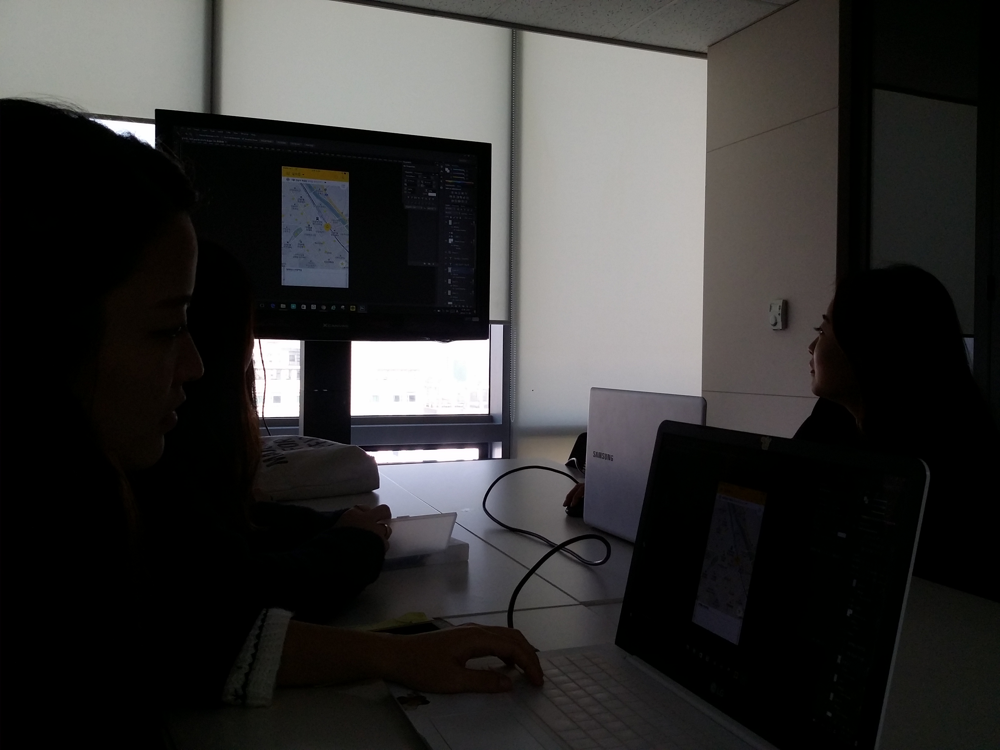

캡스톤 디자인 주간 보고서 [11주차]
| 팀 명 | 11팀 |
|---|---|
| 과제명 | 알바천국 감성 푸쉬 서비스 기획 |
| 회의날짜 | 2016년 11월 8일 ( 10:00 ) ~ 2016년 11월 8일 ( 15:00 ) |
| 참석자 | 성명 | 역할 | 서명 |
|---|---|---|---|
| 안가은 | 회의록 작성, 팀장 | ||
| 김윤신 | 기획 | ||
| 박채원 | 기획 | ||
| 조영지 | 기획 |
| 주간 보고 내용(한주의 내용을 간단하게 정리) |
|---|
|
11주차에는 웨버 샌드윅에 방문하여 현재까지의 진행 상황과 앞으로의 계획에 대한 이야기를 한 후, 알바천국에 방문하여 저번 주 진행한 시안 디벨롭과 설문 조사 질문지, UT 시나리오를 발표하였습니다.  회의 결과 현재 시안을 토대로 스토리 보드를 작성하고 사용자 경로 테스트를 진행하기로 하였습니다. 그 후 사용자 경로 테스트의 사전 준비와 졸업 전시회를 위한 포스터를 제작하였습니다. |
| 다음 진행 방향 및 계획 |
|---|
|
사용자 경로 테스트 진행 알바천국 사용자 설문 조사 진행 '현위치' 메뉴 리뉴얼을 기반으로 한 스토리보드 작성 |
* 주차별 주간 보고서를 필히 제출